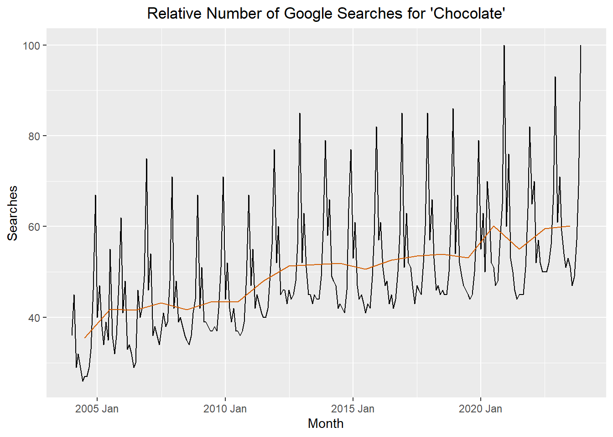
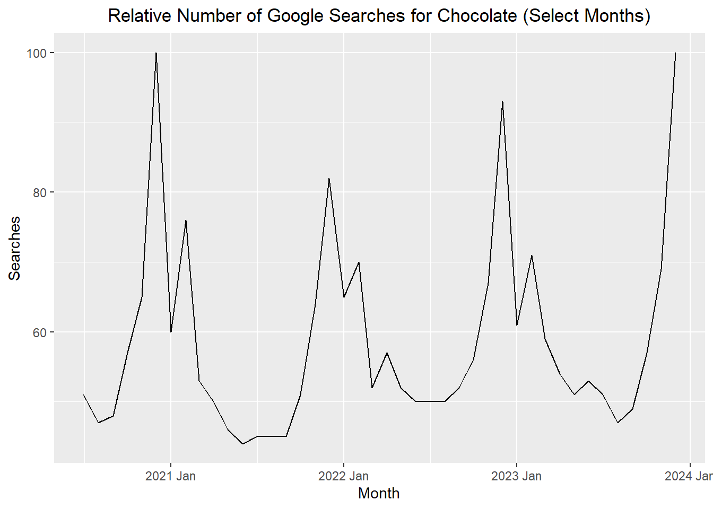
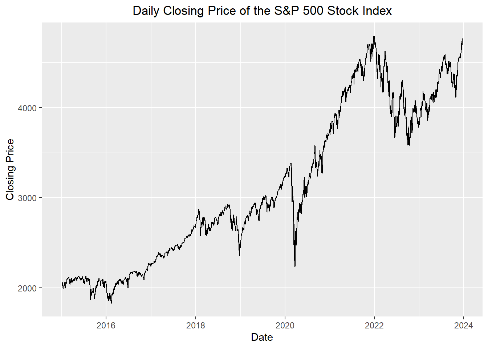
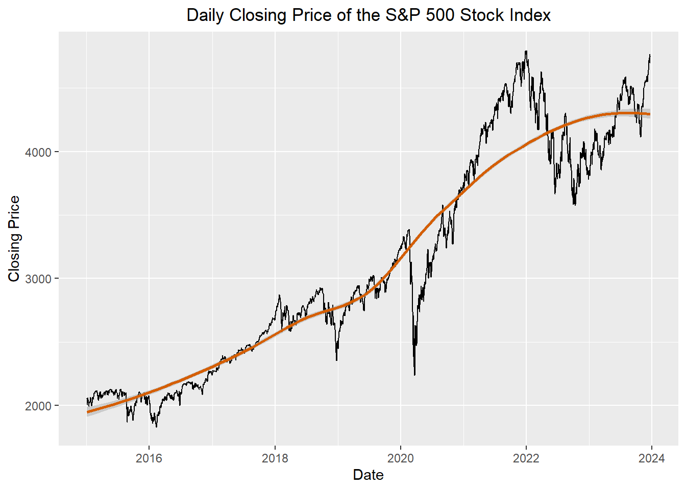

Category: All categories
Month chocolate: (United States)
2004-01 36
2004-02 45
2004-03 29
2004-04 32
2004-05 29
2004-06 26
2004-07 27
2004-08 27
2004-09 29
2004-10 33
2004-11 46
2004-12 67
2005-01 40
⋮ ⋮
2023-10 57
2023-11 69
2023-12 100Course Introduction
Chapter 1: Lesson 1
Learning Outcomes
Introduce the course structure and syllabus
- Get to know each other
- Describe key concepts in time series analysis
- Explore an example time series interactively
Introduction to the course structure and Canvas (30 min)
- Introduction of teacher(s)
- Introduction of students
- Syllabus
- Software: R and RStudio
- Textbook
- Cowpertwait, P. S. P., & Metcalfe, A. V. (2009). Introductory Time Series with R. Springer. ISBN 978-0-387-88697-8; e-ISBN 978-0-387-88698-5; DOI 10.1007/978-0-387-88698-5.
- Supplement to the Textbook
- Modern R code
- Time Series (TS) Notebook for in-class activities
- Lesson cadence
- Read assigned section(s) from the textbook
- Assigned sections listed in the TS notebook
- Reading Journals
- Record your learning
- Include all of the following from the assigned reading: vocabulary terms, nomenclature, models, important concepts, and your questions
- Review another student’s learning journal at the beginning of class
- In-class Activities
- Homework
- Read assigned section(s) from the textbook
- Assessment Structure
- Daily Homework, Multi-week Projects, Three Exams
- Grading Categories
- Reading Journal (10%)
- Homework (40%)
- Projects (25%)
- Exams (25%)
- Grades: 93% = A
- Calendar
- Team structure for class activities
- Random assignment, frequent changes, partner with each student in the class
- We are all in this together
Class Activity: Google Trends (Searches for “Chocolate”) (10 min)
Google Trends allows you to download a time series showing the proportional number of searches for a given term. The month with the highest number of searches has a value of 100. The values for the other months are given as a percentage of the peak month’s value. The following table illustrates the data, as given by Google Trends.
The cleaned version of the data used for this demonstration are available in the file chocolate.csv. We can read this directly into a data frame using the command
chocolate_month <- rio::import("https://byuistats.github.io/timeseries/data/chocolate.csv")
In Lesson 3, we will practice converting data like this into a time series (tsibble) object.
Show the code
if (!require("pacman")) install.packages("pacman")
pacman::p_load("tsibble", "fable",
"feasts", "tsibbledata",
"fable.prophet", "tidyverse",
"patchwork", "rio")
# read in the data from a csv and make the tsibble
# change the line below to include your file path
chocolate_month <- rio::import("https://byuistats.github.io/timeseries/data/chocolate.csv")
start_date <- lubridate::ymd("2004-01-01")
date_seq <- seq(start_date,
start_date + months(nrow(chocolate_month)-1),
by = "1 months")
chocolate_tibble <- tibble(
dates = date_seq,
year = lubridate::year(date_seq),
month = lubridate::month(date_seq),
value = dplyr::pull(chocolate_month, chocolate)
)
chocolate_month_ts <- chocolate_tibble |>
mutate(index = tsibble::yearmonth(dates)) |>
as_tsibble(index = index)
chocolate_month_ts |> head()# A tsibble: 6 x 5 [1M]
dates year month value index
<date> <dbl> <dbl> <int> <mth>
1 2004-01-01 2004 1 36 2004 Jan
2 2004-02-01 2004 2 45 2004 Feb
3 2004-03-01 2004 3 29 2004 Mar
4 2004-04-01 2004 4 32 2004 Apr
5 2004-05-01 2004 5 29 2004 May
6 2004-06-01 2004 6 26 2004 JunFor now, we will use the tsibble object (which in this case is called chocolate_month_ts) to explore the time series. Here is a plot of the time series representing the proportional frequency of searches for the term “chocolate.”
Show the code
autoplot(chocolate_month_ts, .vars = value) +
labs(
x = "Month",
y = "Searches",
title = "Relative Number of Google Searches for 'Chocolate'"
) +
theme(plot.title = element_text(hjust = 0.5))
The red line represents the mean for each year. The point for this line was positioned to align with July of the year.

Consider the data for the last few years:

Autocorrelation is a fancy word that means that sequential values in a sequence of data are related in some way.
Consider searches in successive months. Are they independent?

Discuss these vocabulary terms in the context of the Google Trends (“Chocolate”) example: - Time series - Sampling interval - Autocorrelation (or serial dependence) - Trend - Seasonal variation - Cycle
Class Activity: S&P 500 (10 min)
The time series plot below illustrates the daily closing prices of the standard and Poor’s 500 stock index (S&P 500).

The red line represents the mean for each year. The point for this line was positioned to align with July of the year.

Discuss these vocabulary terms in the context of the S&P 500 example:
- Time series
- Sampling interval
- Autocorrelation (or serial dependence)
- Trend
- Seasonal variation
- Cycle
- Deterministic vs. Stochastic
Recap (5 min)
- What is time series data?
- Define “time series” (e.g. observations collected sequentially over time)
- Examples of time series data
- Why ordinary regression fails – correlated error terms
- Examples of time series from different domains:
- Daily credit card balance
- Daily closing stock prices
- Monthly sales figures
- Yearly global temperature measurements
- Secondly wave heights in an ocean buoy
- Weekly unemployment rates
- Quarterly GDP estimates
- Importance of context and subject matter knowledge
- Role of models (explanation, prediction, simulation)
- Are there any questions on the course or time series data?
Homework Preview (5 min)
- Review upcoming homework assignment
- Clarify questions